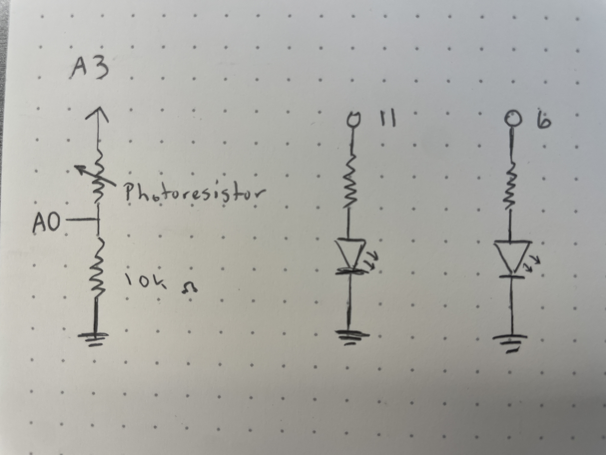
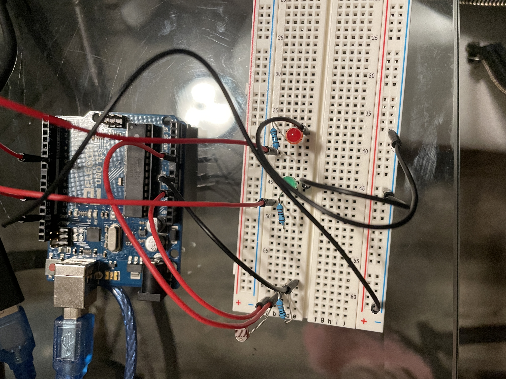

Assignment 3: Input Output!
Here is all the documentation for assignment 3, including:
- Circuit Operation
- Schematic
- Circuit
- Firmware

The gif above shows the circuit operation. As the photoresistor's light source is blocked, the red LED turns off and the green LED turns on. When the light source is unblocked, the opposite happens: the green LED turns off and the red LED turns on.
Schematic:

Circuit:

As the Arduino provides 5V of power and LEDs typically want to run at 20mA, a resistor is necessary in the circuit so that the LEDs don't burn out.
This circuit includes green and red LEDs, which both exhibit a 1.8 V drop. Using Ohm's Law (V=I*R) we can calculate the resistance necessary for
the LEDs to not get burnt out by the circuit.
V = I*R
5 V - 1.8 V = 20 mA * R
R = 3.2 V / 20 mA = 160 ohms
As 160 ohms is the minimum resistance necessary, I used a 330 ohm resistor for both LEDs so that they don't appear too bright.
For the photoresistor, the voltage divider may read values around 400 to 800, although it is dependent on the light source. In my circuit's operation,
my photoresistor exhibited values from 0 to 1200. Another 10,000 ohm resistor was necessary as part of this circuit in order to prevent floating.
Floating occurs when it is difficult to read the current. By adding a larger resistor (10,000 ohms), the reading of the analog pin will be more accurate.
V= I*R
5 V = 0.0005 A * R
R = 5 V / 0.0005 A = 10000 ohms
Firmware:
/* Some of the following code is from the Arduino example codes, specifically
the Analog Calibration and Smoothing files.
*/
const int analogPin = A0; // Analog input pin that the photoresistor is attached to
int sensorValue = 0; // value read from the photoresistor
const int numReadings = 10; // constant which represents when the saved readings should be reset
int readings[numReadings]; // the readings from the photoresistor
int readIndex = 0; // the index of the current reading
int total = 0; // the running total of all the readings added together
int average = 0; // the average of the readings
void setup() {
// initialize serial communications at 9600 bps
Serial.begin(9600);
// sets the initial values of the array holding the sensor readings to 0
for (int thisReading = 0; thisReading < numReadings; thisReading++) {
readings[thisReading] = 0;
}
// initialize the LED pins as outputs
pinMode(6, OUTPUT);
pinMode(11, OUTPUT);
}
void loop() {
// read the value of the photoresistor
sensorValue = analogRead(analogPin);
// subtract the last reading
total = total - readings[readIndex];
// read from the sensor
readings[readIndex] = sensorValue;
// add the reading to the total
total = total + readings[readIndex];
// advance to the next position in the array
readIndex = readIndex + 1;
// if we're at the end of the array...
if (readIndex >= numReadings) {
// ...wrap around to the beginning
readIndex = 0;
}
// calculate the average of the past 10 readings
average = total / numReadings;
// print information about the sensor average and current sensor value to help with debugging
Serial.print("sensor average = ");
Serial.print(average);
Serial.print(" sensor value = ");
Serial.println(sensorValue);
delay(30); // delay in between reads for stability
// check whether or not the light the photoresistor is reading is more than the average or not
if (average > sensorValue) {
// if the reading is lower than the average, turn on the pin connected to the green LED
analogWrite(11, sensorValue);
// turn off the red LED
analogWrite(6, LOW);
}
else {
// if the reading is higher than the average, turn on the pin connected to the red LED
analogWrite(6, sensorValue);
// turn off the green LED
analogWrite(11, LOW);
}
}